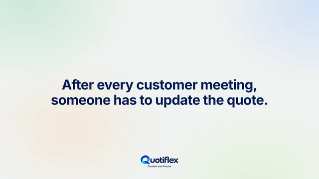
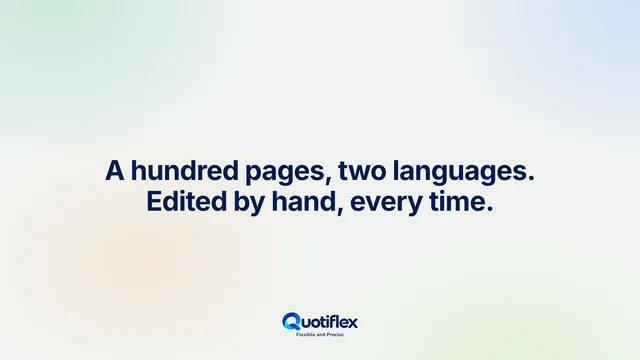

Konfigurace v souvislostech.
Sestavte nabídku z produktů a příslušenství. Povinné volby, doporučení a pravidla kompatibility vidíte už během konfigurace.
- Katalog produktů a kategorie
- Řízená konfigurace
- Volby a příslušenství
INŽENÝRSTVÍ / SOFTWARE / APLIKOVANÁ AI
Do vývoje podnikového softwaru přinášíme hluboké inženýrské znalosti a praktické zvládnutí umělé inteligence.
KONFIGURACE
CENA
NABÍDKA
Sídlíme v Praze. Inženýrství v tempu moderního byznysu.
NÁŠ PRODUKT
Quotiflex využívá AI při výběru řešení, pomáhá předcházet chybám a hledá nejlepší kombinace pro každou nabídku. Tvorba i schvalování nabídek jsou tak rychlejší.

Deník obchodu
Poznámku napíšete jako vždy. Jedním kliknutím AI navrhne změny nabídky, úpravy shrnutí obchodu a úkol, každý návrh i s větou, ze které vychází. Pravidla každý návrh zkontrolují a vy rozhodnete, co použít.

Deník obchoduPoznámky z jednání se zákazníkem jako změny nabídky.1:11 Pravidla příslušenstvíNa příslušenství v nabídce už nezapomenete.1:26
Pravidla příslušenstvíNa příslušenství v nabídce už nezapomenete.1:26
Dokument pro zákazníkaDokument, který čte váš zákazník.1:30 Schvalování slevKontrola marže bez brzdění prodeje.1:24
Schvalování slevKontrola marže bez brzdění prodeje.1:24Videa jsou v angličtině a přehrávají se z YouTube v režimu rozšířeného soukromí, a to až po stisknutí tlačítka přehrát.
SPOLEČNOST ZA QUOTIFLEXEM
LinkPort Systems s.r.o. vyvíjí a uvádí na trh Quotiflex CPQ, který v jednom procesu tvorby nabídek spojuje konfiguraci produktů, obchodní kontrolu a asistenci AI.
Vývoj v oblasti AI sledujeme do hloubky a průběžně vyhodnocujeme, jak jej využít co nejúčinněji. Tyto znalosti přenášíme do našich produktů i pracovních postupů všude, kde přinášejí praktický užitek: zvyšují produktivitu a inženýrská kvalita přitom zůstává na prvním místě.
Společný pracovní prostor pro obchod, konstrukci a finance, od výběru produktu po další revizi.
Sestavte nabídku z produktů a příslušenství. Povinné volby, doporučení a pravidla kompatibility vidíte už během konfigurace.
Mějte ceny, náklady a marže na očích. Uvidíte, jak byla položka spočítána a kolik slevy ještě zbývá v rámci platné politiky.
Nechte se AI vést při výběru vhodných řešení, odhalování chyb a hledání účinných kombinací. Nabídky vytvoříte a schválíte rychleji a pokračujete prezentací a revizí.
AI provází rozhodnutí za každou nabídkou: správná řešení, silnější kombinace a méně chyb, s rychlejší cestou od přípravy ke schválení.
Nabídky s pomocí AIAI doporučuje nejvhodnější řešení už při vzniku nabídky a pomáhá vašemu týmu rozhodovat se informovaně.
AI pomáhá najít nejlepší kombinace řešení pro požadavky každé nabídky.
AI pomáhá odhalit možné chyby už během přípravy nabídky a vede tým k přesnějšímu návrhu.
Asistence AI zrychluje tvorbu i schvalování nabídek a pomáhá týmům efektivněji dojít od požadavků k odsouhlasené nabídce.
OD POŽADAVKŮ K NABÍDCE
Projděte si tři části CPQ. Každý krok staví na rozhodnutích, která mu předcházela.
Vyberte základní zařízení a jeho příslušenství. Konfigurační pravidla pomáhají rozlišit, co je povinné, doporučené nebo nekompatibilní.
JAK PRACUJEME
Začínáme vašimi požadavky, volíme správné metody a výsledek ověřujeme proti zadání.
Proberme váš projektDefinujeme požadavky, omezení a priority, na kterých vašemu podnikání záleží.
Volíme osvědčené metody a nástroje AI tam, kde práci přinášejí praktický užitek.
Řešení kontrolujeme proti dohodnutým požadavkům a neseme odpovědnost za jeho kvalitu.
PROČ LINKPORT SYSTEMS
Spolupracujte s lidmi, kteří Quotiflex vytvářejí, rozumějí jeho logice a rozvíjejí ho podle potřeb složitých obchodních nabídek.
Mluvte s týmemQuotiflex vyvíjíme a rozumíme produktovým rozhodnutím, konfigurační logice i obchodním procesům, které za ním stojí.
Spojujeme inženýrské znalosti s hlubokým porozuměním tomu, jak AI účinně využít všude, kde přináší praktický užitek.
Za Quotiflexem stojí tým, který systém vyvíjí, rozumí potřebám zákazníků a tyto znalosti promítá do jeho dalšího vývoje.
NĚKOLIK UŽITEČNÝCH ODPOVĚDÍ
LinkPort Systems s.r.o. je společnost, která stojí za Quotiflex CPQ. Tento web představuje společnost; web Quotiflex se věnuje produktu a jeho možnostem.
CPQ znamená Configure, Price, Quote, tedy konfigurace, cena, nabídka: výběr správné konfigurace produktu, výpočet obchodních podmínek a vytvoření strukturované nabídky.
AI při tvorbě nabídky doporučuje vhodná řešení, pomáhá předcházet chybám a hledá nejlepší kombinace. Také zrychluje přípravu a schvalování nabídek. Tyto funkce jsou přímo součástí Quotiflexu.
Vaše produktové řady, ceny a schvalování; jak by asistence AI mohla podpořit vaši tvorbu nabídek; a co musí obsahovat výsledná nabídka. Dobrým výchozím bodem je typický produkt nebo nabídka.
Stávající uživatelé se mohou přihlásit do aplikace Quotiflex názvem společnosti a přihlašovacími údaji, které jim po registraci jejich společnosti v systému předá správce systému Quotiflex.
SPOJME SE
Napište nám o svém podnikání a o tom, co chcete při tvorbě nabídek zlepšit.
Za osobní údaje odeslané tímto kontaktním formulářem odpovídá LinkPort Systems s.r.o., IČO 30152496, Vlkova 532/8, Žižkov, 130 00 Praha 3. Vaše jméno, e-mailovou adresu, případně název společnosti a zprávu používáme k odpovědi na váš dotaz.
S dotazy k odeslaným údajům nebo s žádostí o jejich výmaz se na nás obraťte formulářem výše.
Video na této stránce se přehrává z YouTube v režimu rozšířeného soukromí (youtube-nocookie.com), a to až po stisknutí tlačítka přehrát; předtím se z YouTube nic nenačítá. Na video se pak vztahují zásady ochrany soukromí YouTube.
Odkazy na této stránce mohou vést na externí weby s vlastními pravidly ochrany soukromí.